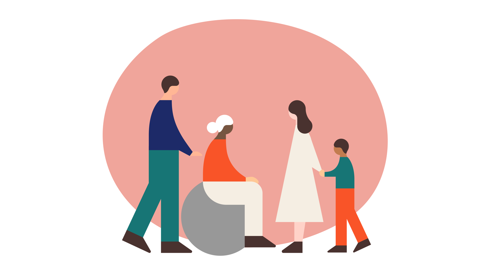
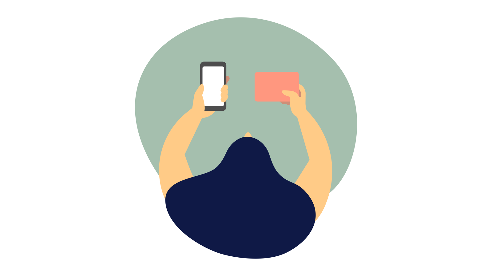

設定を自分好みにしたい
- 機種や価格帯の選択肢が多い
- Galaxyなど機種ごとに操作感が違う
- 慣れるまで戻る操作などを確認
くらしDXサポート
46,800円
節約できる可能性があります

まずはここから
わからなくても大丈夫。選ぶだけで始められます。
選ぶ前に知っておきたいこと
正解はひとつではありません。今の使い方に合う基準から考えます。
デジタル家計簿
この1年で見つけた節約額を記録しています。
スマホ料金2026年5月 見直し
¥18,000/ 年サブスク3サービスを整理
¥12,000/ 年電気料金料金プランを変更
¥8,400/ 年保険料重複補償を整理
¥40,000/ 年無理な勧誘なし必要なものだけをご提案
担当者が直接対応機械ではなく人が寄り添います
個人情報を最小限に診断内容は保存・送信しません
デジタル家計診断
わかる範囲で大丈夫です。約3分で結果がわかります。
デジタル家計簿
見直しの成果を、わかりやすく積み上げています。
今年の年間節約額
¥78,400昨年より +¥21,600見直し履歴
ひとりで悩まなくて大丈夫
専門用語を使わず、できるまでゆっくりご案内します。
よくあるご相談
くらしのデジタル選び方ガイド
良い・悪いではなく、あなたの使い方に合うかを一緒に考えます。
まず知ってほしいこと
うまくいかない期間は失敗ではなく、得意・不得意を知るための「育成期間」です。
導入の進め方
文章の要約や定型文など、失敗しても戻せる作業から始めます。
人が直した点を残すと、AIへの伝え方と任せられる範囲が見えてきます。
最初は人の方が速くても大丈夫。指示と確認を重ねて自動化へ近づけます。
現場への適用
作業の状況を説明できるデータが、AI活用の土台になります。
個人情報・機密情報は、そのままAIへ入力しません利用を許可されたAIとデータ範囲を先に確認します。
「Fable 5」「GPT-5.5」など新しい名称や性能比較が話題になっても、提供状況や利用制限は変わります。精度だけでなく、データの扱い、費用、速度、利用地域、サポートを確認しましょう。
自動化を急がず、現場で困っていることから整理します。
Android・iPhone
どちらが上ではありません。操作の慣れ、家族と同じ機種か、使いたいアプリから選びます。
iPhone 17の考え方
機能・価格・在庫は変わるため、購入前に公式情報と実機で確認します。
今のスマホを見ながら、変えない選択も含めてご案内します。
動画配信サービス
作品数だけでなく、月額、家族で見るか、見たい期間を基準にします。
| サービス | 選ぶときの目安 | 向いている見方 |
|---|---|---|
| Netflix | オリジナル作品 | 独自ドラマや映画を楽しみたい |
| Prime Video | プライム特典との組み合わせ | 買い物など他の特典も使う |
| U-NEXT | 幅広い作品ラインアップ | 作品数を重視する |
| Disney+ | ディズニー・マーベルなど | 家族やブランド作品を楽しむ |
| Hulu | 日テレ系・海外ドラマ | テレビ番組やドラマを見る |
| dアニメストア | アニメ特化 | アニメを中心に見る |
| ABEMA | 独自番組・チャンネル型 | 番組表から気軽に見る |
| Lemino | 韓国ドラマなど | 好きなジャンルを集中して見る |
| DMM TV | DMM関連特典 | 他のDMMサービスも使う |
| DAZN | スポーツ | 試合や大会をライブで見る |
節約のヒント
U-NEXTなど料金が高く感じる場合は、見たい作品がある期間だけ使う方法もあります。
配信作品・料金・無料期間は変わります。契約前に各サービスの公式情報をご確認ください。
見ていないサービスがわからなくても、明細から確認できます。
格安SIM
通信品質は地域や時間帯で変わります。生活する場所と必要なサポートから選びます。
自宅、職場、よく行く場所でのエリアと、利用者の声を確認。
メールアドレスが銀行・行政・会員アプリに登録されていないか確認。
直近3か月の使用量と、長電話・通話アプリの使い方を確認。
店舗、電話、チャットのどれが必要かを先に決める。
失敗しにくい進め方
料金・キャンペーン・通信エリアは変更されます。契約前に公式情報と重要事項説明を確認します。
今のままが安心なら、無理に変更をおすすめしません。
安全と個人情報
便利さより先に、データの最小化・透明性・ご本人の選択を守ります。

現在のデモ環境
診断はブラウザ内で完結します。入力した料金・契約・電話番号はサーバーへ送信されません。
データ分類
目的と保存期間を先に決め、不要なデータは取得しません。
料金・契約中サービス
相談予約の電話番号
パスワード・暗証番号・本人確認書類
ガバナンス
設計・運用・事故対応まで、継続して点検します。
AI・外部サービスは規約、学習利用、保存先を審査してから利用します。
扱える情報・扱えない情報を明示し、目的外利用を禁止します。
本番環境はMFA、役割別権限、定期的なアクセス棚卸しを必須とします。
誰が・いつ・何を扱ったかを改ざん耐性のある監査ログに残します。
プライバシー、誤情報、権利侵害、攻撃リスクをリリース前に審査します。
検知・封じ込め・通知・復旧・再発防止を責任者と期限つきで実行します。
もしものとき
※ 連絡先はデモ表記です。本番公開前に実在する責任部署と24時間連絡経路を設定します。
準備できました操作結果をここに表示します。